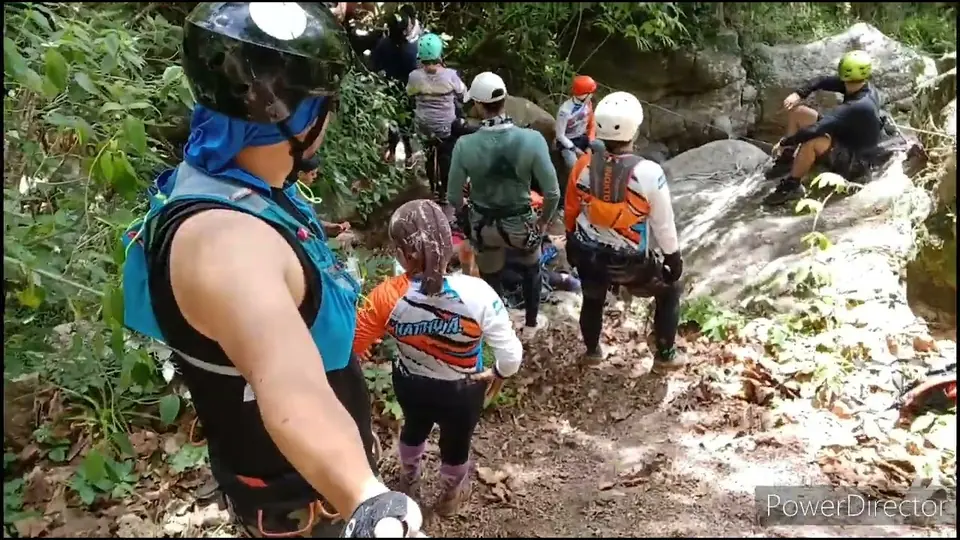
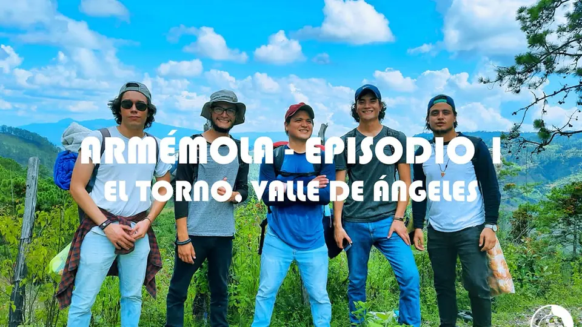
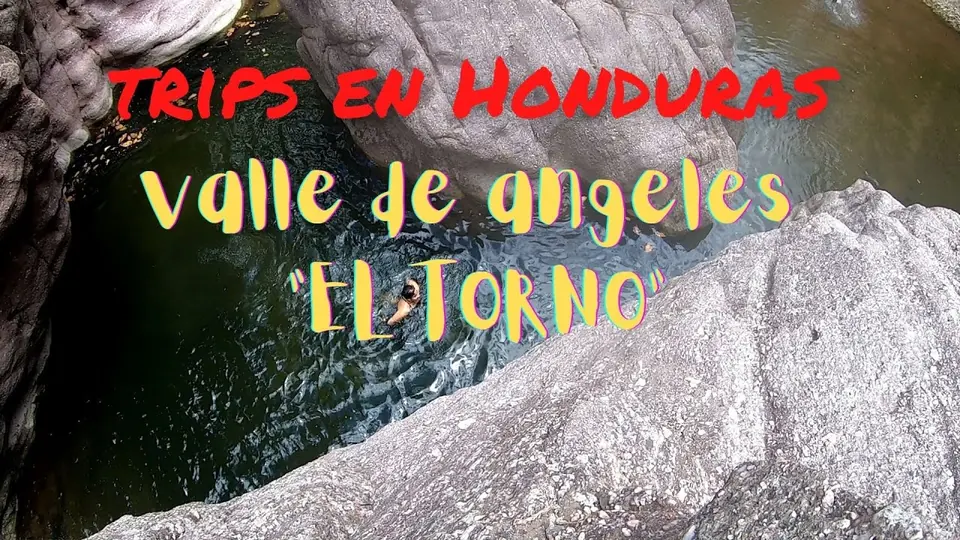
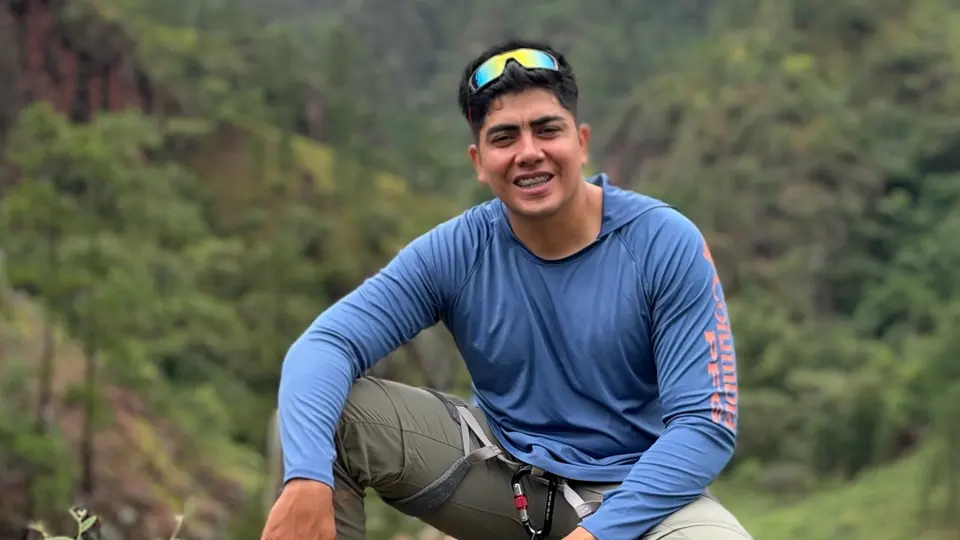
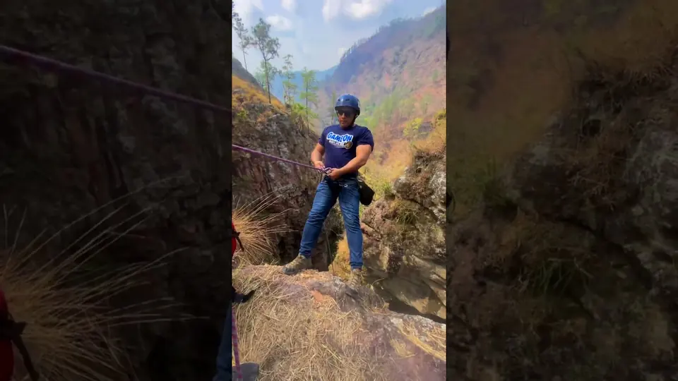

Rapel
Por la pared del cañón, con cuerdas y equipo. Lo organiza el grupo de aventura Honduras Extrema; consulta con ellos fechas y precio.
Honduras Extrema en Instagram ↗
A 500 METROS DE LA HACIENDA
Un cañón de roca con río, pozas para nadar y una caída de agua en Cerro Grande, Valle de Ángeles.
CÓMO SE BAJA
El descenso es exigente. Ve con guía, calzado cerrado y alguien que conozca el camino.
Por la pared del cañón, con cuerdas y equipo. Lo organiza el grupo de aventura Honduras Extrema; consulta con ellos fechas y precio.
Honduras Extrema en Instagram ↗
Sendero dentro del cañón, de unos 3 a 4,5 km con subidas y bajadas fuertes. El último tramo a la cascada es escabroso.

Nadar y saltar en las pozas al pie de la caída. Mejor de junio a enero: en marzo y abril el río casi se seca.
SAL DESDE LA HACIENDA
La hacienda y el cañón están a unos 500 metros en línea recta. Coordina con nosotros tu visita para llegar, comer y descansar antes o después de bajar.

ASÍ SE VE EL TORNO
¿Grabaste el tuyo? Etiqueta a @haciendaelparaisohn y lo ponemos aquí.

Descubrí Honduras · 2023
Ver en YouTube ↗Max Delcid · 2023
Ver en YouTube ↗Armémola Hn · 2021
Ver en YouTube ↗YouTube · 2021
Ver en YouTube ↗
pijiniando con miguelito · 2026
Ver en YouTube ↗
Enrique Trejo Funez · 2024
Ver en YouTube ↗ANTES DE BAJAR
Por Cerro Grande y la aldea Los Dos Ríos, Valle de Ángeles, Francisco Morazán, a unos 500 metros en línea recta de Hacienda El Paraíso.
De junio a enero. En el verano (marzo y abril) el río casi se seca.
No lo recomendamos. El tramo final a la cascada es escabroso; ve con guía y con alguien que conozca el camino.
Calzado cerrado con buen agarre, ropa que se pueda mojar, agua, protector solar y una muda seca para el regreso.
MÁS CERCA DE LO QUE CREES